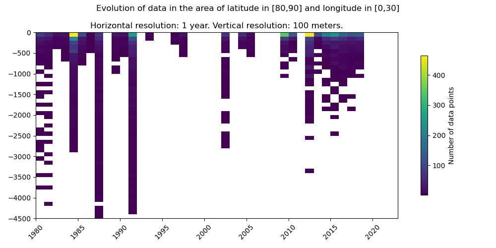

Profile Density¶
make run-plot-profile
Summary¶
This scripts reads data from a folder and plot the density profile (depth as vertical axis and date as horizontal) over a given area.
Configuration¶
The configuration file for this script is config/plot_profile.toml (based on config/default_plot_profile.toml). All the parameters and their functionality are listed below:
Input/Output¶
LOADING_DIR
Directory from which to load data.
default: "bgc_data"
Expected type: str
SAVE
Whether to save the figure or not.
default: true
Expected type: bool
SAVING_DIR
Directory in which to save the figure.
default: "bgc_figs"
Expected type: str
SHOW
Whether to show the figure or not.
default: true
Expected type: bool
Data Selection¶
VARIABLE
Name of the variable to map. The names are supposed to be the ones defined in config/variables.toml (config/default/variables.toml) by default.). If 'all': will map density of datapoints, regardless of their variables.
default: "NTRA"
Expected type: str
DATE_MIN
First date to map (included).
default: "20070101"
Expected type: str (must match the YYYYMMDD format)
DATE_MAX
Last date to map (included).
default: "20201231"
Expected type: str (must match the YYYYMMDD format)
LATITUDE_MIN
Minimum latitude boundary to consider for the loaded data (included).
default: 50
Expected type: int or float
LATITUDE_MAX
Maximum latitude boundary to consider for the loaded data (included).
default: 90
Expected type: int or float
LONGITUDE_MIN
Minimum longitude boundary to consider for the loaded data (included).
default: -180
Expected type: int or float
LONGITUDE_MAX
Maximum longitude boundary to consider for the loaded data (included).
default: 180
Expected type: int or float
DEPTH_MIN
Minimum depth boundary to consider for the loaded data (included), 'nan' indicate not boundary.
default: nan
Expected type: int or float
DEPTH_MAX
Maximum depth boundary to consider for the loaded data (included), 'nan' indicate not boundary.
default: 0
Expected type: int or float
EXPOCODES_TO_LOAD
Precise expocode to load alone. If empty, no discrimination on expocode will be conducted.
default: []
Expected type: list[str]
PRIORITY
Providers priority list to use when removing duplicates.
default: ["GLODAP_2022", "CMEMS", "ARGO", "NMDC", "CLIVAR", "IMR", "ICES"]
Expected type: list[str]
Plotting Options¶
INTERVAL
Horizontal resolution of the plot. If set to day: will group datapoint by day. If set to week: will group datapoints by their week number. If set to month: will group datapoints by month. If set to year: will grou datapoints by year. If set to custom: will group datapoints based on a custom interval.
default: "month"
Expected type: str
CUSTOM_INTERVAL
If interval is 'custom', length of the custom interval (in days).
default: 8
Expected type: int
DEPTH_INTERVAL
Vertical resolution of the figure. If of type int: vertical axis will be divided in equally sized bins of size depth_interval. If of type list[int]: vertical axis will be divided according to the given levels (levls value ar supposed to negative).
default: 10
Expected type: int or list[int]
Others¶
VERBOSE
Verbose value, the higher, the more informations. If set to 0 or below: no information displayed. If set to 1: minimal informations displayed. If set to 2: very complete informations displayed. If set to 3 or higher: exhaustive informations displayed.
default: 2
Expected type: int
Script Output¶
When executed, this script displays a density profile plot. This plot shows the depth vs date density of the data.
This is an example of what this plot could look like:
